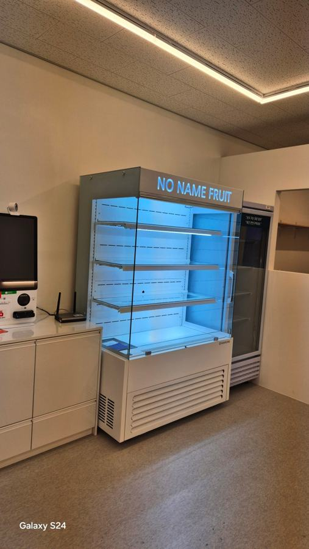
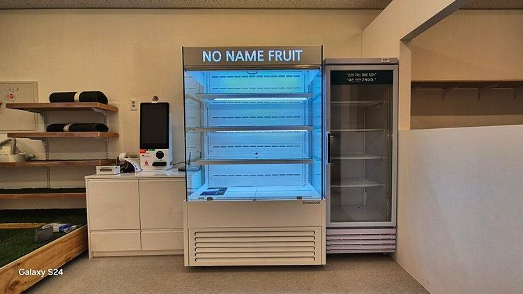
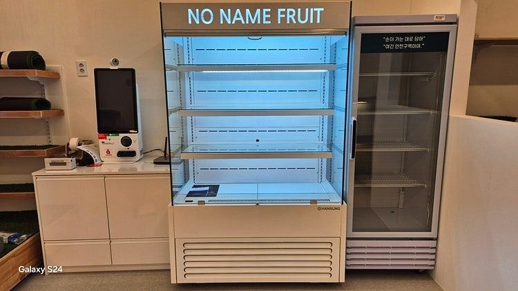
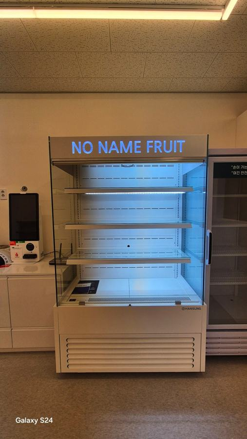
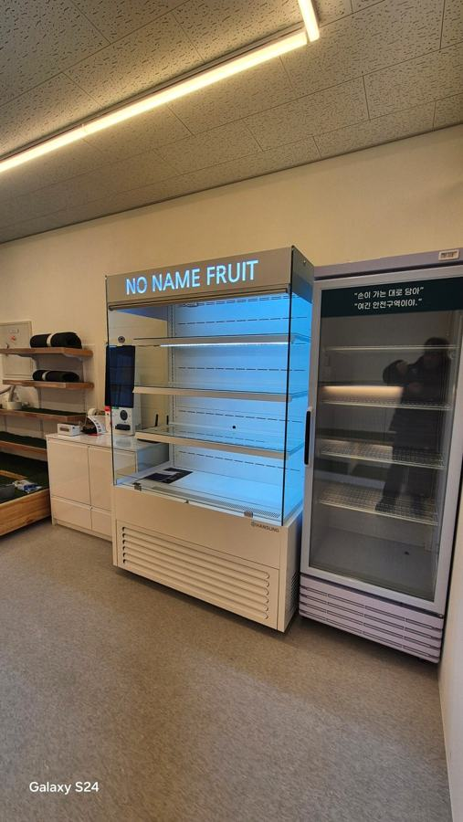
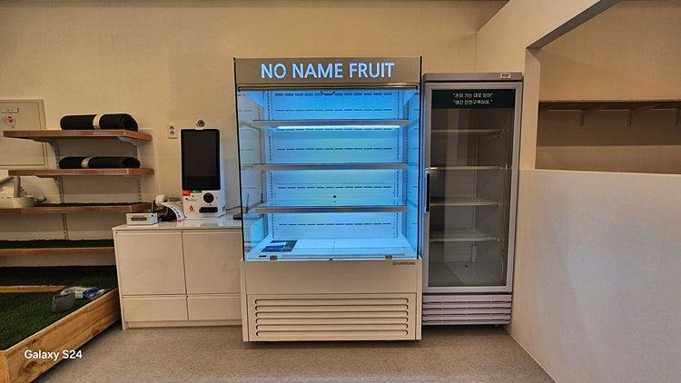
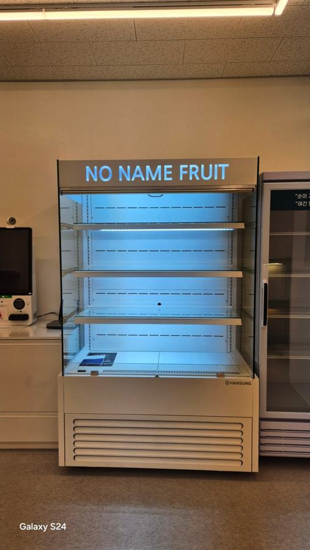
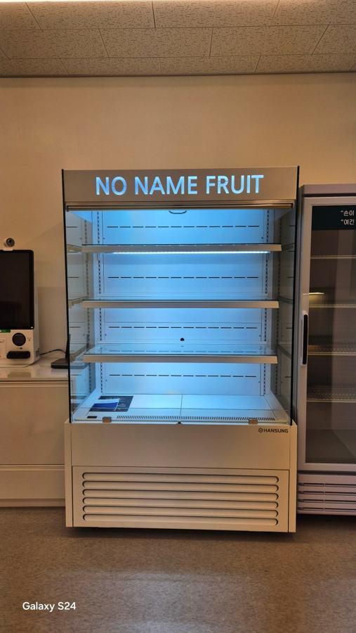
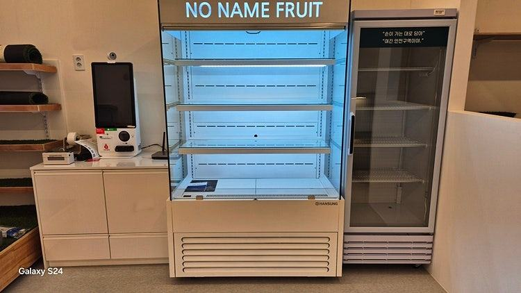

오픈쇼케이스
오픈쇼케이스 여름철 냉기가 약해질 때 먼저 볼 곳

여름철 오픈쇼케이스가 약해지는 건 문이 없는 구조에 매장 열기와 손님 출입이 겹치기 때문입니다. 에어커튼 송풍구가 상품에 막히지 않았는지, 기계실 통풍과 응축기 먼지는 괜찮은지 먼저 보고, 마감 후 나이트커버만 꾸준히 내려도 부담이 크게 줄어듭니다.
안녕하세요. 편의점과 샐러드·음료 매장의 오픈형 냉장 진열대를 만드는 한성쇼케이스입니다.
날이 더워지면 "오후만 되면 앞줄 음료가 미지근해요"라는 연락이 부쩍 늘어납니다. 아침에는 멀쩡하던 진열대가 손님이 몰리는 시간대부터 힘을 못 쓰는 거죠.
오픈쇼케이스는 손님이 문을 열 필요 없이 바로 집어 갈 수 있어 회전이 빠른 대신, 매장 공기와 냉기 사이에 문이 없습니다.
여름에는 이 구조가 가장 크게 시험받습니다.
오늘은 여름철 오픈쇼케이스 냉기가 약해지는 이유와, 성수기 전에 사장님이 직접 점검해 볼 수 있는 부분을 정리해 드리겠습니다.
1. 여름에 유독 약해지는 이유
오픈쇼케이스는 위에서 아래로 차가운 바람을 흘려 보내 보이지 않는 막을 만드는 에어커튼으로 냉기를 지킵니다.
매장 기온이 올라가면 이 막 바깥 공기와의 온도 차가 커지고, 손님이 손을 넣고 빼는 횟수까지 늘면서 막이 자주 흐트러집니다.
그 결과 콤프레셔와 팬이 더 오래, 더 자주 돌아가야 합니다. 부품에 쌓이는 부담이 커지다 보니 여름에 고장 접수가 몰리고, 수리 대기도 길어지는 경우가 많습니다.
2. 에어커튼을 살리는 진열
가장 흔한 원인은 진열입니다. 상품을 선반 끝까지 앞으로 당겨 쌓거나 맨 아래 흡입구 앞에 박스를 세워 두면 에어커튼이 끊기고, 앞줄부터 온도가 올라갑니다.
선반 앞쪽 끝선과 하단 흡입구 그릴은 비워 두세요. 가격표나 POP를 송풍구에 걸어 두는 것도 바람길을 막는 원인이 됩니다.
- 상품이 선반 앞 끝선을 넘지 않게 정리하세요.
- 하단 흡입구 그릴 앞에 물건을 두지 마세요.
- 송풍구 쪽 POP와 가격표 위치를 옮기세요.


3. 설치 위치와 매장 바람
출입문 바로 앞이나 에어컨 바람이 정면으로 닿는 자리라면 바깥 열기와 강한 바람이 에어커튼을 밀어냅니다.
에어컨 풍향을 쇼케이스 반대쪽으로 돌리기만 해도 차이가 나는 경우가 많습니다.
창가 직사광선도 여름에 부담이 큽니다. 오후에 해가 드는 자리라면 블라인드나 차양으로 가려 주세요.
4. 기계실 통풍과 응축기 먼지
기계실은 냉장고 안의 열을 밖으로 내보내는 곳입니다. 뒷면이나 옆면이 벽에 붙어 있거나, 응축기에 먼지와 기름때가 쌓여 있으면 열이 빠지지 못해 냉기가 약해집니다.
성수기 전에 전원을 안전하게 끄고 응축기 먼지를 털어 주세요.
온도를 관리하는 컨트롤러와 바람을 돌리는 팬모터도 여름에 이상 신호를 먼저 보내는 부품입니다. 표시 온도와 실제 체감이 크게 다르거나, 한쪽 선반만 유독 미지근하거나, 평소와 다른 소음이 들린다면 설정 온도를 더 내리지 말고 점검을 받아 보세요.
- 뒷면·옆면 통풍 공간이 막히지 않았는지 보세요.
- 응축기 먼지를 성수기 전에 청소하세요.
5. 마감 후 나이트커버
영업이 끝난 뒤에도 문 없는 진열대는 밤새 냉기를 잃습니다. 마감할 때 나이트커버를 끝까지 내려 두면 밤사이 기계 부담이 줄고, 다음 날 아침 온도도 빨리 잡힙니다.
커버가 찢어지거나 끝이 말려 있다면 여름 전에 손봐 두세요. 다음 날 아침에는 상품을 채우기 전에 온도가 충분히 내려왔는지부터 확인하는 습관을 들이시면 이상을 일찍 알아챌 수 있습니다.
체크리스트
- 선반 앞 끝선과 하단 흡입구 비우기
- 에어컨 풍향과 직사광선 차단
- 뒷면·옆면 통풍 공간 확보
- 응축기 먼지 청소
- 마감 후 나이트커버 사용
현장에서 자주 보는 경우: 여름에 컨트롤러와 팬모터가 먼저 신호를 보낼 때
여름철 음료 냉장 설비 A/S 현장에서 교체가 잦은 부품은 온도를 감지해 압축기를 켜고 끄는 컨트롤러(TC)와 냉기를 순환시키는 팬모터입니다.
매장 구석에 바짝 붙여 설치했거나, 응축기 주변에 먼지와 기름때가 쌓였거나, 고무 패킹이 낡은 매장에서 이런 증상이 먼저 나타났습니다.
컨트롤러 이상이면 설정 온도와 실제 느낌이 크게 다르거나 압축기가 계속 꺼지지 않고, 팬모터 이상이면 바람 소리가 거의 없고 한쪽 선반만 미지근해집니다.
이럴 때 온도를 억지로 더 낮추기보다 통풍과 먼지부터 확인하고 점검을 받는 편이 안전했습니다.










자주 묻는 질문
여름에 설정 온도를 더 낮추면 해결되나요?
일시적으로는 나아 보여도 콤프레셔 부담과 성에가 늘어날 수 있습니다. 진열과 통풍, 응축기 먼지를 먼저 확인하고 그래도 안 되면 점검을 받아 보세요.
나이트커버가 없는 제품도 달 수 있나요?
제품 구조에 따라 달라집니다. 모델명과 진열대 사진을 보내 주시면 적용 가능 여부를 확인해 드립니다.
여름에 A/S가 밀리면 어떻게 하나요?
성수기 전에 미리 점검을 받아 두시는 게 가장 좋습니다. 한성쇼케이스는 전국 240여 개 A/S 센터를 운영하고 있으니 031-986-2458로 접수해 주세요.
매장 조건에 맞춰 만드는 한성쇼케이스
원하시는 제품 사진과 설치할 공간 사진만 보내 주셔도 매장에 맞는 구성을 추천해 드립니다.
- 전국 240여 개 A/S 전담 센터 운영
- 본사 대량 자재 매입으로 품질 대비 합리적인 가격
- 유럽제·삼성 냉각 콤프레셔 적용
- 국내 최초 쇼케이스 전문 디자이너 상주
매장 폭과 원하는 진열 구성을 알려 주세요. 실측과 견적을 안내해 드립니다.
031-986-2458